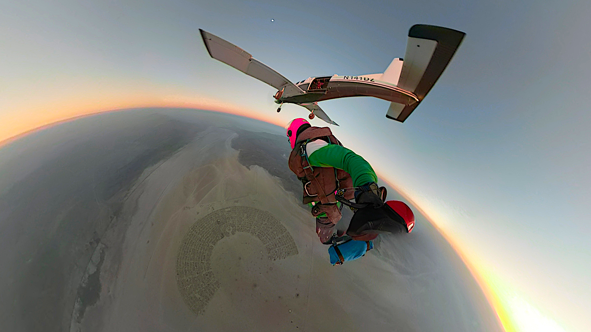

 Conor lives at the intersection of data science and optimal psychology, using data and technology to understand and reinforce the best parts of human experience. His training is in neuroscience, artificial intelligence, and philosophy. He transitioned to the tech sector after spending four years leveraging data for more impactful humanitarian interventions in developing countries. Since then. he has held a variety of positions including a faculty role for University of New Haven and Galvanize's Master of Science in Data Science program, principal data scientist and consultant for a number of startups and a lead data scientist and educator for machine learning and artificial intelligence at Databricks. Outside of data, Conor is an avid skydiver, getting into the sport after reading about the intersection of action sports and flow states in books like Steven Kotler's The Rise of Superman and Mihaly Csikszentmihalyi's Flow.